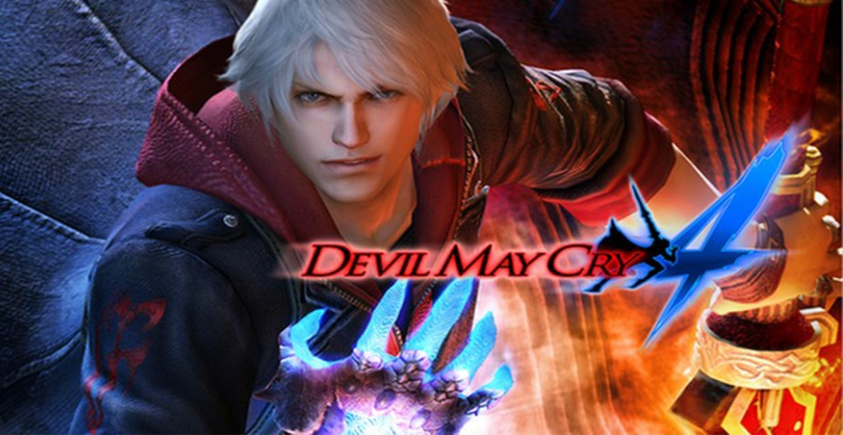
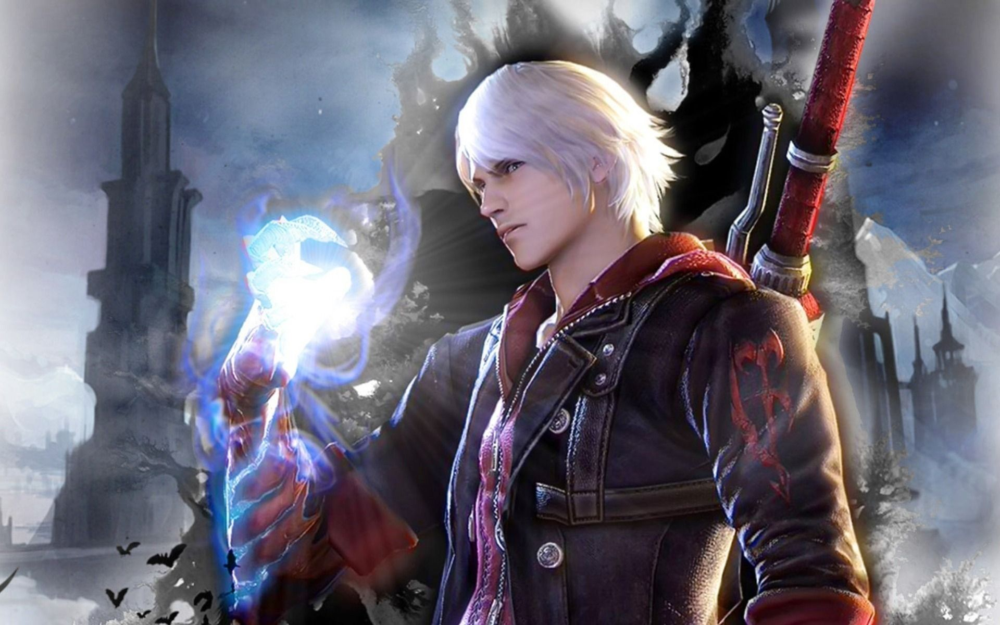

Desenvolvido pela equipe especializada em videogames da Capcom, Devil May Cry 4 (escrito em seu país natal, Japão, através dos kanji "デビル メイ クライ 4" e lido como "Debiru Mei Kurai 4") é o quarto sucessor da franquia de mesmo nome, contudo, entra como o terceiro dentro da cronologia do jogo. Foi publicado no ano de 2008 na data de 31/01 para as plataformas Playstation 3 e Xbox 360, sendo adaptado para PCs em 24 de junho do mesmo ano. A grande jogada desse game e o que mais o diferencia dos demais jogos da série é a mudança de protagonista, antes tendo Dante com o papel principal, interpretado em DMC 4 por Nero, personagem que não teve o nome mencionado em nenhum dos três títulos que o antecederam, surpreendendo os fãs de longa data. Porém, essa foi a maior mudança que a Capcom optou por realizar até então, já que as mecânicas de gameplay e outros pontos continuam com a mesma base dos jogos passados.
O estilo hack and slash, característico da série e de outros títulos como God of War e Dante's Inferno, ainda predomina durante a média de 8 a 9 horas de jogatina que o jogo proporciona, sem muitas alterações nos controles também. Além disso, a "tradição" de criar um entretenimento frenético ao som de um rock 'n' roll rápido e gritante se mantém em DMC 4, dando um ar ainda mais impulsivo durante as mutilações extraordinárias de inimigos. Em relação à história, o jogo mantém uma narrativa um tanto comum, já que detém de personagens que podem ser considerados vilões, heróis e, também, a princesa em perigo. Entretanto, o game apresenta vários pontos para serem discutidos entre os fãs da franquia, já que introduzir um novo protagonista a uma série tão famosa (ainda mais com poderes sobrenaturais inexplicáveis) dificilmente cortaria todas as pontas soltas que podem ser deixadas no processo, mas a situação desse jogo foi intencional. Além disso, em 2014, foi lançada uma versão especial do título para PS4, essa que conta com uma pequena história envolvendo Vergil, irmão do antigo protagonista, e permitindo que os jogadores controlem Trish e Lady, companheiras de Dante nos jogos antecessores.

Nero é confrontado por Credo, que também foi infundido com poder demoníaco, dando-lhe as características de um anjo. Ele é derrotado por Nero, no entanto, Kyrie chega a tempo de testemunhar Nero com seu braço demoníaco sobre seu irmão derrotado. Agnus usa a confusão e distração da parte de Nero para sequestrar Kyrie e fugir. Credo adia sua rivalidade com Nero até que ele possa investigar a situação. Nero mais uma vez encontra Dante, mas sua busca para capturá-lo há muito foi esquecida, ele deseja simplesmente passar Dante. No entanto, Dante quer que Yamato, a espada usada por seu irmão gêmeo Vergil, volte para ele. Uma luta começa onde Dante é vitorioso, no entanto, ele decide deixar Nero ficar com Yamato depois que Nero consegue esfriar a cabeça. Gloria aparece antes de Dante quando Nero sai, no entanto, é revelado que Gloria é na verdade Trish.
Nero chega a Sanctus e o “ Salvador”, Um enorme demônio que a Ordem pretende trazer à vida usando o poder de Nero e Yamato. Usando Kyrie como escudo humano, Sanctus consegue deter Nero. Sanctus revela que o Salvador requer a essência de Sparda para alcançar o poder total, ele originalmente pretendia que Dante fosse usado como o núcleo, mas aceita Nero como um substituto adequado, alegando que Nero também é um descendente de Sparda. Credo tenta resgatar os dois, mas é mortalmente ferido por Sanctus. Dante chega e diz a Nero para lhe devolver a espada. Nero diz a Dante para "vir e pegar". Nero é então absorvido pelo Salvador. Agnus usa Yamato para abrir o verdadeiro Hellgate, liberando uma multidão de demônios na cidade. Sanctus chega com o Salvador e começa a exterminar os demônios. Dante, ao ouvir o pedido de Credo para resgatar Kyrie e Nero, luta para voltar para a cidade. Em seu caminho, ele destrói os três menores Hellgates que costumava libertar os demônios.
Dante chega de volta à Opera House e mata Agnus. Ele então recupera Yamatoe usa-o para destruir o verdadeiro Hellgate antes de confrontar Sanctus e o Salvador. Depois de descobrir que o Salvador é invencível do lado de fora, Dante leva Yamato ao peito do Salvador, onde é recuperado por Nero. Nero derrota Sanctus dentro do Salvador e resgata Kyrie. Nero eventualmente usa seu Devil Bringer para destruir o Salvador e Sanctus. Depois de confiar Yamato a Nero, Dante parte. A reunião de Nero e Kyrie é interrompida por outro ataque de demônio. No final secreto, na loja Devil May Cry, Trish e Lady discutem sobre a pequena recompensa que Lady havia oferecido, com Lady acusando Trish por ter se disfarçado de Gloria e entregado a espada de Sparda para a Ordem. Depois que Trish o arrasta à força para a discussão, Dante termina dizendo que é "melhor do que nada". E o jogo acaba com um cliente ligando para a loja e dizendo que tem outro trabalho para Dante fazer, e o trio sai para ajudar.